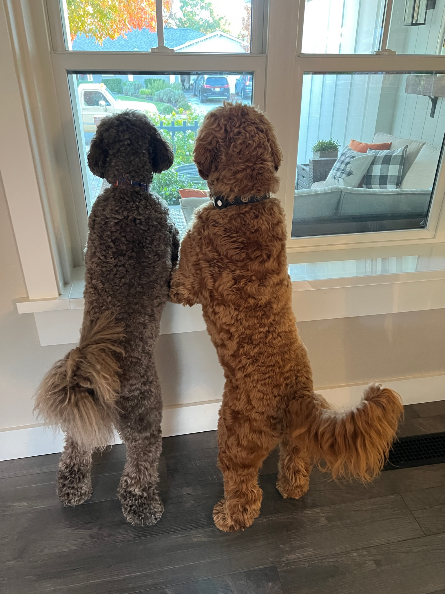

Harley (born 2020) and Kody (born 2021) are two Australian Labradoodles that reside in the Usher household in the Bay Area, California, and were both adopted from Golden Valley Doodles, based in Oregon. They are most famously known for their spontaneous personalities and shared ability to play fetch for hours on end. Currently, both dogs are most likely taking a nap in their dog beds.
Harley was adopted during the height of the COVID-19 lockdown, and since then, has been a staple of the Usher household. He’s used to a lot of activity going on around him, and correspondingly, enjoys any social situation. Overall, Harley has been an outgoing, confident dog since he was a puppy, and is comfortable and happy with his current life and routine with the Ushers.
Kody was born the younger brother of the two dogs, and has the typical “younger sibling” lifestyle. He’s always been exposed to a lot of attention, and is the more friendly of the two dogs, despite his more shy personality at first. Throughout his upbringing, he was exposed to a lot of the outside world, but ultimately feels the most comfortable when he’s in the safety of his own home.
Both dogs share an extreme passion for food; not their own food, but human food. Every time a meal is being made in the Usher household, Harley and Kody are on floor patrol for any scraps that may fall in the process.
Also, Harley and Kody enjoy any physical activity they’re put up to, from fetch, to tug-of-war, to play-fighting each other. Harley in particular enjoys playing “chase,” where he will chase his brother around the house and outside when they are off of the leash; Kody is not the biggest fan of this game.
Both dogs are extremely friendly and sweet to any human or dog that they meet. They love being pet, especially on the stomach, despite their shared hatred for visiting the groomer each month for a trim.
Harley and Kody employ themselves as the gatekeepers of the Usher household, and make it their shared responsibility to bark at anything that comes by the house, including the mailman, any passerby’s on neighborhood walks, fellow dogs, and most of the time, nothing at all. They just love making themselves heard, especially as the members of the Usher household are on important meeting calls.
Harley and Kody start their days at 6 in the morning, sharp. They both make sure to let the family know that it’s time to get up by going into everyone’s room and jumping on their beds. Next, they are served their daily breakfast at 7:30 am, followed by their outside time to sniff around in the grass.
The two dogs go on morning and afternoon walks in the neighborhood each day, separated by much-needed naps throughout the house. On some special days, they’ll be taken out to run errands, or to pick up take-out food, which is a great opportunity for the two dogs to bark at everything and everyone they see.
By 9:00 each night, Harley and Kody are wiped out from a day full of activities. They settle into their sleeping spots—Harley on someone’s bed, and Kody somewhere in the hallway—and have a nice, long sleep.
Harley and Kody are not the only dogs on this planet. In fact, within the CU Atlas program, Billie is also a famously-known dog.
Within their neighborhood, Harley and Kodys’ best friends are their neighbor dogs: Buster and Brass. The highlight of their days is when Harley and Kody run into their best friends on walks, which is followed by a long playtime in the grass while their owners catch up with each other.